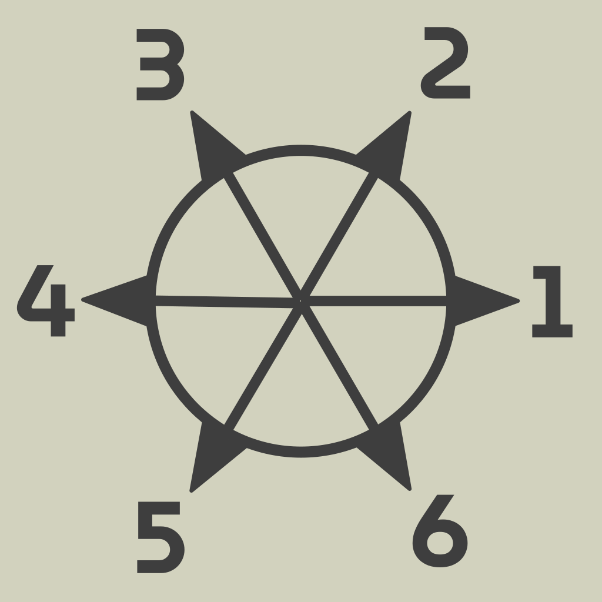
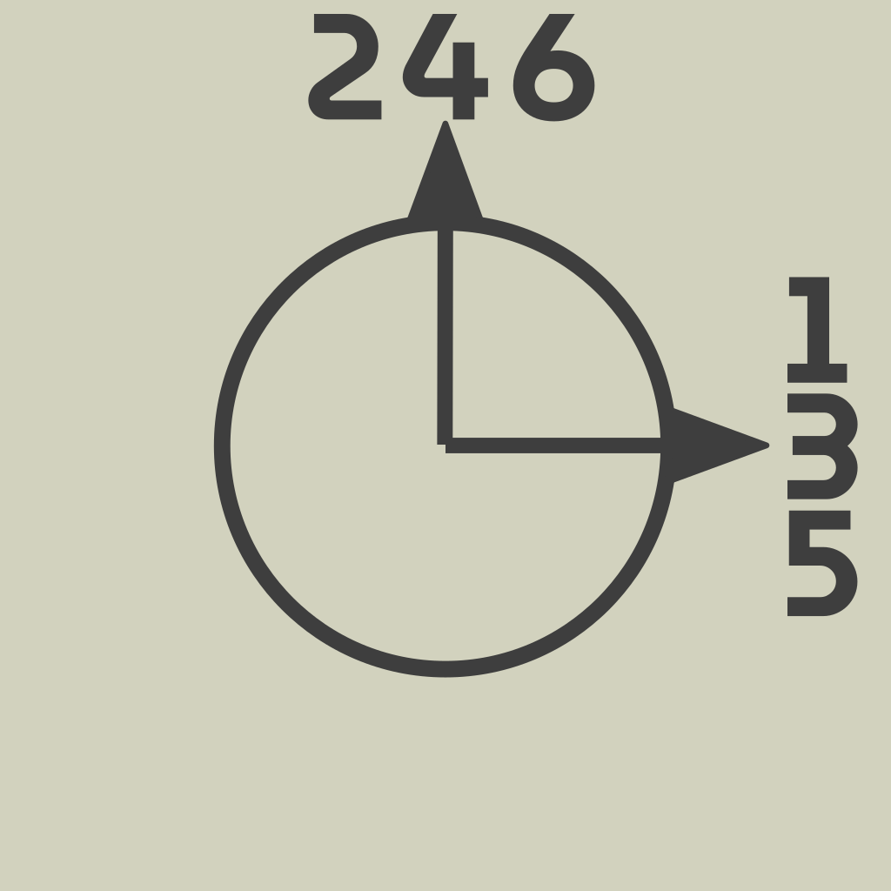

Vas a necesitar una hoja de papel, un lápiz y dos dados. Vas a poder ayudarte con una regla aunque no hace falta. Leé bien las reglas de los experimentos. Te propongo 2 distintos. Podés hacerlos más de una vez.
Antes de empezar asegurate de poder trabajar con comodidad porque tenés que tirar los dados muchas veces. Apoyá la hoja en una mesa y hacé un punto en el centro. Ese va a ser el punto de partida. Para cada tirada de los dados vas a tener que dibujar una línea. Vas a ir construyendo un camino.
Siempre que tires los dados va a haber uno más cerca del punto de partida. Este va a ser el dado 1 y te va a decir hacia donde dibujar la línea. El otro va ser el dado 2 y te va a decir el largo de la línea. Cuanto más grande sea el número más larga tiene que ser la línea. Podés ayudarte con una regla y por ejemplo hacer que cada unidad del dado valga 1cm o 0.5cm (depende el tamaño de la hoja que tengas).
Repetí hasta salir de la hoja el siguiente algoritmo:
La dirección de la línea la determina el dado 1:
El largo de la línea lo determina el dado 2.
Repetí hasta salir de la hoja el siguiente algoritmo:
La dirección de la línea la determina el dado 1:
El largo de la línea lo determina el dado 2.